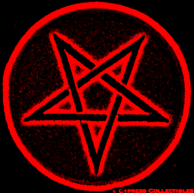

Nuevo Lanzamento para consola Nintendo Swch: DOOM Eternal
DOOM Eternal, el galardonado juego y “uno de los
mejores shooters en primera persona de la historia” según GameRevolution, llega a Nintendo Switch. DOOM
Eternal, desarrollado por id Software y Panic Button, es la secuela directa de DOOM®, ganador del premio al
Mejor juego de acción de 2016 en los Game Awards.
Hace poco se reveló que el clásico juego de disparos Doom también se puede jugar en Twitter.
Por medio de
comandos, que se deben enviar como tuit a la cuenta Tweet2Doom, es posible jugar este título en pequeños
clips de video que devuelve el bot. La misma cuenta entregó un tutorial sobre cómo escribir un tuit para que
el bot reemplace las entradas del teclado en controles para jugar.
Y bueno, este método se suma a la diversa lista de plataformas donde se puede jugar Doom, ya que este título
tiene la fama de ser ejecutable en muchos dispositivos. Tanto así que incluso se ha transformado en una
especie de meme y una broma interna en la comunidad gamer; en internet la gente bromea con jugar Doom en un
microondas o en una prueba de embarazo. Y por más insólito que parezca, el juego realmente se puede ejecutar
allí.

La franquicia Doom (estilizada DooM o DOOM) es una serie de videojuegos de disparos en primera persona
desarrollados por id Software. Esta franquicia incluye novelas, cómics, juegos de mesa y adaptaciones
cinematográficas. La serie se centra en las hazañas de un marine espacial no identificado que opera bajo
las
ordenes de la Union Aerospace Corporation (UAC), que lucha contra hordas de demonios y no muertos en el
inframundo y la Tierra, protagonizando diversos viajes por portales entre ambos mundos.
El videojuego Doom de 1993 es considerado uno de los videojuegos pioneros de disparos en primera persona
al
presentar, en la época de las computadoras compatibles con IBM, características novedosas como gráficos
3D,
espacialidad de tercera dimensión, juego en red multijugador y soporte para modificaciones creadas por
el
jugador con el formato Doom WAD. Desde su debut, se han vendido más de 10 millones de copias de
videojuegos
de la serie Doom. Desde el lanzamiento de Doom en 1993, la serie ha generado numerosas secuelas,
paquetes de
expansión y 2 películas, además de miles de mods creados por la comunidad de fans.
Doom fue uno de los videojuegos más reconocidos de 1993. Fue tan popular, que en su época la mayoría de
los
PC lo tenían instalado, superando a las instalaciones del sistema operativo Windows Doom fue diseñado
para ser fácilmente modificable;Los datos, incluidos los diseños de nivel y los archivos de gráficos, se
almacenan en archivos WAD, abreviatura de "Where's All the Data" ("Donde están todos los datos"). Esto
permite cambiar cualquier parte del diseño sin necesidad de ajustar el código del motor del videojuego.
Doom es considerado uno de los videojuegos pioneros del género de videojuegos de disparos en primera
persona.
En 1994 salió a la venta Doom II: Hell on Earth,continuación directa de la historia de Doom, seguido de
otros dos lanzamientos oficiales basados en su versión del motor Doom: Master Levels for Doom II en 1995
y
Final Doom en 1996.
Doom 64, desarrollado exclusivamente para Nintendo 64, presenta un cambio casi total en el planteamiento
de
los niveles, texturas y sprites, intentando aprovechar la potencia gráfica que ofrecía la videoconsola.
Fue
lanzado en 1997, siendo desarrollado por Midway Games con supervisión de id Software. Posteriormente, en
2020, durante el lanzamiento de Doom Eternal, fue lanzada también una nueva versión de Doom 64 para PC3
El 3 de agosto de 2004 fue lanzado al mercado Doom 3. Este videojuego es un reinicio de la serie Doom.
Doom 3 incluyó no solo uno de los motores 3D más potentes hasta ese entonces, sino también una
ambientación
única para un videojuego de esta clase.
Después de que el desarrollo del proyecto Doom 4 se descartara en 2013, Tim Willits de id Software dijo
que
el próximo videojuego de la serie Doom seguía siendo el foco del equipo, pero no se tenía certeza de que
se
titulara Doom 4.Más tarde se renombró a simplemente Doom en 2014. El videojuego se convirtió en un
segundo reinicio de la serie, en lugar de una continuación o historia de origen de videojuegos
anteriores.
Fue lanzado en 2016.
Cabe destacar una secuela directa de Doom titulada Sigil y creada por John Romero, uno de los creadores
originales de Doom.
La secuela de Doom 2016, Doom Eternal, fue lanzada en el año 2020, seguida de dos expansiones tituladas
The
Ancient Gods.